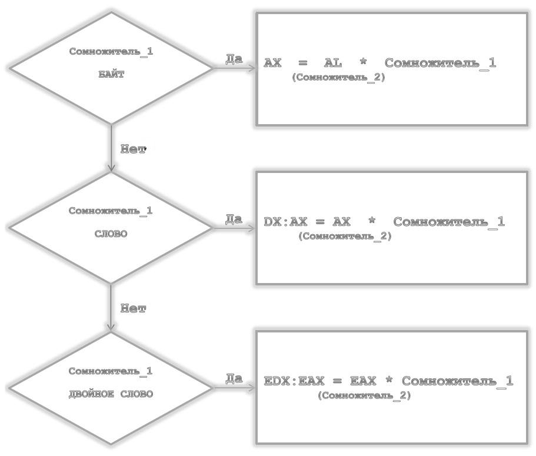

Арифметические команды.
Все арифметические команды устанавливают флаги CF, AF,
SF, ZF, OF и PF в зависимости от результата
операции.
Двоичные числа могут иметь длину 8, 16 и 32 бит.
Значение старшего (самого левого бита) задает знак числа:
- 0 – положительное,
- 1 – отрицательное.
Отрицательные числа представляются в так называемом
дополнительном коде, в котором для получения отрицательного числа
необходимо инвертировать все биты положительного числа и прибавить к
нему 1.
| Положительное: |
20 = 14h |
00010100b |
|
| Инверсное: |
|
11101011b |
|
| Отрицательное: |
|
11101100b |
= EC = -20 |
| Проверка: |
20 - 20 = 0 |
00010100b
11101100b
(1)00000000b |
|
Команды сложения ADD, ADC, INC.
Командам БЕЗРАЗЛИЧНО какие числа складываются (знаковые или
нет).
Если в результате сложения результат НЕ поместился в отведенное
место, устанавливается флаг переноса CF=1. Команда ADC как
раз и реагирует на этот флаг. Вырабатываются еще 4 флага:
PF, SF, ZF, OF.
Состояние флагов после выполнения команд ADD, ADC, INC
| Флаг |
Пояснение |
| CF=1 |
Результат сложения НЕ поместился в операнде-приемнике |
| PF=1 |
Результат сложения имеет четное число бит со значением 1 |
| SF=1 |
Копируется СТАРШИЙ (ЗНАКОВЫЙ) бит результата сложения |
| ZF=1 |
Результат сложения равен НУЛЮ |
| OF=1 |
Если при сложении двух чисел ОДНОГО знака результат сложения
получился БОЛЬШЕ допустимого значения. В этом случае приемник
МЕНЯЕТ ЗНАК. |
Команда ADD (ADDition)
Назначение: сложение двух операндов
источник и приемник размерностью байт, слово или двойное слово.
Синтаксис: ADD Приемник,
Источник
Алгоритм работы:
-
сложить операнды источник и приемник;
-
записать результат сложения в приемник;
-
установить флаги.
Логика работы:<Приемник>
= < Приемник> + <Источник>
Применение: Команда add используется
для сложения двух целочисленных операндов. Результат сложения помещается
по адресу первого операнда. Если результат сложения выходит за границы
операнда приемник (возникает переполнение), то учесть эту ситуацию следует
путем анализа флага cf и последующего возможного применения команды
adc.
Команда ADC (Addition with Carry)
Назначение: cложение двух операндов с учетом
переноса из младшего разряда.
Синтаксис: ADC Приемник, Источник
Алгоритм работы:
-
сложить два операнда;
-
поместить результат в первый операнд;
-
в зависимости от результата установить флаги.
Логика работы:<Приемник> = <Приемник> +
<Источник> + < CF >
Применение: Команда adc используется при
сложении длинных двоичных чисел. Ее можно использовать как самостоятельно, так и
совместно с командой add. При совместном использовании команды adc с
командой add сложение младших байтов/слов/двойных слов осуществляется
командой add, а уже старшие байты/слова/двойные слова складываются
командой adc, учитывающей переносы из младших разрядов в старшие.
Таким образом, команда adc значительно расширяет диапазон значений
складываемых чисел.
.MODEL LARGE, C |
|
|
;x1=a1+b1
x1,a1,b1:Long |
.DATA
EXTRN x1:DWORD, a1:DWORD, b1:DWORD
.CODE
PUBLIC addaL
addaL PROC FAR |
|
MOV AX, WORD PTR a1 |
; ax <== мл. часть а1 |
MOV BX, WORD PTR a1+2 |
; bx <== ст. часть а1 |
MOV CX, WORD PTR b1 |
; cx <== мл. часть b1 |
MOV DX, WORD PTR b1+2 |
; dx <== ст. часть b1 |
ADD AX,CX |
; < ax >:=< ax >+< cx > |
мл. часть |
ADC BX,DX |
; < bx >:=< bx >+< dx >+< CF > |
ст. часть |
MOV WORD PTR x1,AX |
; мл. часть х1 <== < ax > |
MOV WORD PTR x1+2,BX |
; ст. часть х1 <== < bx > |
RET
addaL ENDP |
|
Команда INC (INCrement operand by 1)
Назначение: увеличение значения операнда в
памяти или регистре на 1.
Синтаксис: INC Операнд
Алгоритм работы: команда увеличивает операнд
на единицу.
Логика работы:< Операнд > = < Операнд
> + 1
Применение: Команда используется для
увеличения значения байта, слова, двойного слова в памяти или
регистре на единицу. При этом команда не воздействует на
флаг cf.
inc ax
; увеличить значение в ax
на 1
Команды вычитания SUB, SBB, DEC и NEG
Команды вычитания SUB, SBB, DEC ОБРАТНЫ
соответствующим командам сложения ADD, ADC и INC.
Они имеют те же самые операнды.
SUB (SUBtract — Вычитание).
SBB (SuBtract with Borrow CF — Вычитание с заемом флага
переноса CF).
DEC (DECrement operand
by 1 — Уменьшение значения операнда на 1).
TITLE subaL |
|
|
; x1=a1-b1 |
DATA SEGMENT PARA PUBLIC
EXTRN x1:DWORD,a1:DWORD,b1:DWORD
DATA ENDS
CODE SEGMENT PARA PUBLIC
ASSUME CS:CODE,DS:DATA
PUBLIC suba
suba PROC FAR
MOV AX,WORD PTR a1
MOV BX,WORD PTR a1+2
MOV CX,WORD PTR b1
MOV DX, WORD PTR b1+2
SUB AX,CX
SBB BX,DX
MOV WORD PTR x1,AX
MOV WORD PTR x1+2,BX
RET
suba ENDP
CODE ENDS
END |
|
Команда NEG (NEGate operand)
Назначение: изменение знака (получение
двоичного дополнения) источника.
Синтаксис: NEG Операнд
Алгоритм работы:
-
выполнить вычитание (0 – источник) и поместить результат на место
источника;
- если источник = 0, то его значение не меняется.
Логика работы:< Операнд > = - < Операнд
>
Применение: Команда используется для
формирования двоичного дополнения операнда в памяти или регистре.
Операция двоичного дополнения предполагает инвертирование всех разрядов
операнда с последующим сложением операнда с двоичной единицей. Если операнд
отрицательный, то операция neg над ним означает получение его
модуля.
MOV AL,2 |
|
NEG AL |
; al=0feh — число -2 в дополнительном
коде |
Команды умножения MUL и IMUL
MUL (MULtiply) - беззнаковое умножение
Назначение: операция умножения двух целых
чисел без учета знака.
Синтаксис: MUL сомножитель_1
Алгоритм работы:
Команда выполняет умножение двух целочисленных сомножителей. Один из сомножителей
указан в качестве операнда. Расположение второго сомножителя указано
НЕЯВНО и зависит от размера первого сомножителя.
-
если операнд, указанный в команде — байт, то второй сомножитель
должен располагаться в al;
-
если операнд, указанный в команде — слово, то второй сомножитель
должен располагаться в ax;
-
если операнд, указанный в команде — двойное слово, то второй
сомножитель должен располагаться в eax.
От размера первого сомножителя также зависит размер результата.
Результат умножения помещается также в фиксированное место,
определяемое размером сомножителей:
-
при умножении байтов результат помещается в ax;
-
при умножении слов результат помещается в пару dx:ax;
- при умножении двойных слов результат помещается в
пару edx:eax.
Логика работы:<Произведение> =
<Сомножитель_1> * <Сомножитель_2>

Длина Произведения всегда в ДВА раза больше, чем у
Множителя. Причем старшая часть Произведения находится либо в регистре
АН, либо в DX.
Эти команды тоже вырабатывают флаги.
Устанавливаются флаги CF=1 и OF=1, если результат слишком
велик для отведенных ему регистров назначения.
IMUL (Integer MULtiply) - умножение с учетом знака
Назначение: операция умножения двух
целочисленных двоичных значений со знаком.
В отличии от MUL, команда может иметь 3 различных вида.
| Синтаксис: |
IMUL сомножитель_1 |
|
IMUL сомножитель_1, сомножитель_2
IMUL результат, сомножитель_1, сомножитель_2 |
Алгоритм работы:
Алгоритм работы команды зависит от используемой формы команды. Форма команды
с одним операндом требует явного указания местоположения только
одного сомножителя, который может быть расположен в ячейке памяти или регистре.
Местоположение второго сомножителя фиксировано и зависит от размера первого
сомножителя:
-
если операнд, указанный в команде, — байт, то второй сомножитель
располагается в al;
-
если операнд, указанный в команде, — слово, то второй сомножитель
располагается в ax;
-
если операнд, указанный в команде, — двойное слово, то второй
сомножитель располагается в eax.
Результат умножения для команды с одним операндом также помещается в строго
определенное место, определяемое размером сомножителей:
-
при умножении байтов результат помещается в ax;
-
при умножении слов результат помещается в пару dx:ax;
- при умножении двойных слов результат помещается в пару
edx:eax.
Команды с двумя и тремя операндами однозначно определяют расположение
результата и сомножителей следующим образом:
-
в команде с двумя операндами первый операнд определяет местоположение
первого сомножителя. На его место впоследствии будет записан результат.
Второй операнд определяет местоположение второго сомножителя;
-
в команде с тремя операндами первый операнд определяет
местоположение результата, второй операнд — местоположение первого
сомножителя, третий операнд может быть непосредственно заданным значением
размером в байт, слово или двойное слово.
Логика работы:<Произведение> =
<Сомножитель_1> * <Сомножитель_2>
Длина Произведения всегда в ДВА раза больше, чем у
Множителя. Причем старшая часть Произведения находится либо в регистре
АН, либо в DX.
Эти команды тоже вырабатывают флаги.
Устанавливаются флаги CF=1 и OF=1, если результат слишком
велик для отведенных ему регистров назначения.
Умножение больших чисел
Чтобы умножить большие числа, придется вспомнить правила умножения десятичных
чисел в столбик: множимое умножают на каждую цифру множителя, сдвигают влево
на соответствующее число разрядов и затем складывают полученные результаты.
В нашем случае роль цифр будут играть байты, слова или двойные слова, а
сложение должно выполняться по правилам сложения чисел повышенной точности.
Алгоритм умножения оказывается заметно сложнее, поэтому умножим для примера
только 64-битные числа:
; беззнаковое умножение двух 64-битных чисел
(X и Y) и сохранение
; результата в 128-битное число
Z |
MOV EAX,DWORD PTR X
MOV EBX,EAX |
|
MUL DWORD PTR Y |
; перемножить младшие двойные слова |
MOV DWORD PTR Z,EAX |
; сохранить младшее слово произведения |
MOV ECX,EDX |
; сохранить старшее двойное слово |
MOV EAX,EBX |
; младшее слово "X" в еах |
MUL DWORD PTR Y[4] |
; умножить младшее слово на старшее |
ADD ЕАХ,ЕСХ |
|
ADC EDX,0 |
; добавить перенос |
MOV EBX,EAX |
; сохранить частичное произведение |
MOV ECX,EDX
MOV EAX,DWORD PTR x[4] |
|
MUL DWORD PTR Y |
; умножить старшее слово на младшее |
ADD EAX,EBX |
; сложить с частичным произведением |
MOV DWORD PTR z[4],EAX
ADC ECX,EDX
MOV EAX,DWORD PTR X[4] |
|
MUL DWORD PTR Y[4] |
; умножить старшие слова |
ADD EAX,ECX |
; сложить с частичным произведением |
ADC EDX,0 |
; и добавить перенос |
MOV WORD PTR Z[8],EAX
MOV WORD PTR z[12],EDX |
|
Чтобы выполнить умножение со знаком, потребуется сначала определить знаки
множителей, изменить знаки отрицательных множителей, выполнить обычное
умножение и изменить знак результата, если знаки множителей были разными.
Команды деления DIV и IDIV
Назначение:
DIV выполнение
операции деления двух двоичных беззнаковых значений.
IDIV операция деления двух двоичных значений со знаком.
| Синтаксис: |
DIV делитель |
|
IDIV делитель |
Алгоритм работы:
Для команды необходимо задание двух операндов — делимого и делителя. Делимое
задается неявно и размер его зависит от размера делителя, который указывается
в команде:
-
если делитель размером в байт, то делимое должно быть расположено
в регистре ax. После операции частное помещается в al, а
остаток — в ah;
-
если делитель размером в слово, то делимое должно быть расположено
в паре регистров dx:ax, причем младшая часть делимого находится в
ax. После операции частное помещается в ax, а остаток — в
dx;
-
если делитель размером в двойное слово, то делимое должно быть
расположено в паре регистров edx:eax, причем младшая часть делимого
находится в eax. После операции частное помещается в eax,
а остаток — в edx.
Логика работы:< Частное: Остаток> =
<Делимоё> / <Делитель>
Команда IDIV реагирует на ЗНАК обрабатываемых чисел.
Результат состоит из Частного и Остатка, которым при обычных целочисленных
вычислениях пренебрегают.
Длина Делимого всегда в ДВА раза больше, чем у Делителя. Причем старшая часть
Делимого находится либо в регистре АН, либо в DX.
Эти команды тоже вырабатывают флаги. Но устанавливаются флаги CF=1 и
OF=1, если частное НЕ помещается в регистры AL или АХ.
Здесь, в отличие от команд умножения, может генерироваться ПРЕРЫВАНИЕ
"Деление на ноль”.
Применение: Команда выполняет целочисленное
деление операндов с выдачей результата деления в виде частного и остатка от
деления. При выполнении операции деления возможно возникновение исключительной
ситуации: 0 — ошибка деления. Эта ситуация возникает в одном из двух
случаев: делитель равен 0 или частное слишком велико для его
размещения в регистре eax/ax/al.
Преобразование байта в слово и слова в двойное слово
Данное преобразование для знаковых и беззнаковых данных
осуществляется по разному.
БЕЗЗНАКОВЫЕ числа занимают всю ячейку памяти, понятие знак для
них НЕ существует - они считаются ПОЛОЖИТЕЛЬНЫМИ. Поэтому при преобразовании
БЕЗЗНАКОВЫХ чисел в СТАРШУЮ часть результата надо занести НОЛЬ.
Это можно сделать уже известными нам командами: MOV АН,0 или
MOV DX,0. Однако это НЕ эффективно, используем родную для компьютера
команду сложения по модулю 2:
XOR АН,АН или
XOR DX,DX.
Для ЗНАКОВЫХ данных существуют две команды распространения знака.
CBW (Convert Byte toWord — преобразовать байт, находящийся
в регистре AL, в слово — регистр АХ) и
CWD (Convert Word to Double word — преобразовать слово,
находящееся в регистре АХ, в двойное слово — регистры < DX:AX >).
Операнды им НЕ нужны.
Логика работы:
CBW
| Получаем старшую часть (АН) |
Известная младшая часть (AL) |
| Биты 15 - 8 |
Знак-бит
7 |
Биты 6 - 0 |
| 1111 1111 |
1 |
Информационная часть числа |
| 0000 0000 |
0 |
Информационная часть числа |
| Результат AX |
CWD
| Получаем старшую часть (DX) |
Известная младшая часть (AX) |
| Биты 31 - 16 |
Знак-бит
15 |
Биты 14 - 0 |
| 1111 1111 1111 1111 |
1 |
Информационная часть числа |
| 0000 0000 0000 0000 |
0 |
Информационная часть числа |
| Результат DX:AX |
Применение:
-
Команда CBW используется для приведения операндов к нужной размерности
с учетом знака. Такая необходимость может, в частности, возникнуть при
программировании арифметических операций.
-
Команда CWD используется для расширения значения знакового бита в
регистре ax на биты регистра dx. Данную операцию, в частности,
можно использовать для подготовки к операции деления, для которой размер делимого
должен быть в два раза больше размера делителя, либо для приведения операндов к
одной размерности в командах умножения, сложения, вычитания.
Деление больших чисел
Общий алгоритм деления числа любого размера на число любого размера нельзя
построить с использованием команды DIV — такие операции выполняются
при помощи сдвигов и вычитаний и оказываются весьма сложными. Рассмотрим
сначала менее общую операцию (деление любого числа на слово или двойное слово),
которую можно легко выполнить с помощью команд DIV.
; деление 64-битного числа divident на 16-битное число divisor.
; Частное помещается в 64-битную переменную quotent,
; а остаток - в 16-битную переменную modulo
MOV AX,WORD PTR DIVIDENT[6]
XOR DX,DX
DIV DIVISOR
MOV WORD PTR QUOTENT[6],AX
MOV AX,WORD PTR DIVIDENT[4]
DIV DIVISOR
MOV WORD PTR QUOTENT[4],AX
MOV AX,WORD PTR DIVIDENT[2]
DIV DIVISOR
MOV WORD PTR QUOTENT[2],AX
MOV AX,WORD PTR DIVIDENT
DIV DIVISOR
MOV WORD PTR QUOTENT,AX
MOV MODULO,DX
Деление любого другого числа полностью аналогично — достаточно только добавить нужное
число троек команд mov/div/mov в начало алгоритма.
Наиболее очевидный алгоритм для деления чисел любого размера на числа любого размера —
деление в столбик с помощью последовательных вычитаний делителя (сдвинутого влево на
соответствующее количество разрядов) из делимого, увеличивая соответствующий разряд
частного на 1 при каждом вычитании, пока не останется число, меньшее делителя
(остаток):
; деление 64-битного числа в EDX:EAX на
64-битное число в ЕСХ:ЕВХ.
; Частное помещается
в EDX:EAX, и остаток - в ESI:EDI |
MOV EBP,64 |
; счетчик бит |
XOR ESI,ESI |
|
XOR EDI,EDI |
; остаток = 0 |
bitloop:
SHL EAX,1
RCL EDX,1 |
|
RCL EDI,1 |
; сдвиг на 1 бит влево 128-битного числа |
RCL ESI,1 |
; ESI:EDI:EDX:EAX |
CMP ESI,ECX |
; сравнить старшие двойные слова |
JA divide
JB next |
|
CMP EDI,EBX |
; сравнить младшие двойные слова |
JB next
divide:
SUB EDI,EBX |
|
SBB ESI,ECX |
; ESI:EDI = EBX:ECX |
INC EAX |
; установить младший бит в ЕАХ |
next:
DEC EBP |
; повторить цикл 64 раза |
JNE bitloop |
|
Несмотря на то что этот алгоритм не использует сложных команд, он выполняется на порядок
дольше, чем одна команда DIV.
Лабораторная работа №1